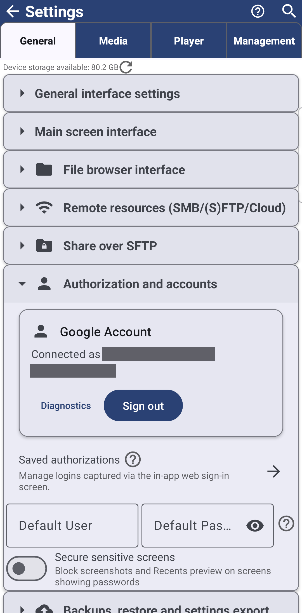

Google Drive Integration
Sign in to Google Drive once and it opens folders as resources, backs up your settings, and moves files and settings between your own devices through a private Drive queue - all from the same Google Account connection, which keeps working across app updates.
Why You'll Love This
Half your photo library already lives in Google Drive, and you would rather browse it from the same app you use for everything else instead of switching to a separate Drive app. Sign in once, and Drive folders open next to your local ones - and the same sign-in quietly does more than open folders: it backs up your settings and lets your phone and your tablet swap files through your own private corner of Drive.
- ✓ FastMediaSorter in the Standard, noLegal, Photos, Legacy or VR edition - not Lite, not FOSS. See The seven editions.
- ✓ A Google account, and a browser installed that can handle the sign-in window (any everyday browser does).
Sign in and add a Drive folder
On the main screen tap Add, then Cloud Storage - "Tap on a provider to authenticate and select folders" - and choose Google Drive on the Select Cloud Provider screen. A sign-in window opens for your Google account; approve it, and the app shows "Signed in: " with your address.
Tap Select Folder and pick the Drive folder you want to see in the app. Each folder you choose becomes a resource of its own, sitting on the main screen exactly like a folder on the phone. If the sign-in window is closed or canceled, the app says so plainly and nothing is added; if a later check fails, it reports "Connection failed: " with the reason instead of a bare error.
Add Resource, Cloud Storage, Google Drive chosen and signed in, Select Folder screen open with a folder tree, one subfolder highlighted.
One sign-in, in one place
Open Settings, the General tab, and find the Google Account card, just above Saved authorizations. Signed out, it explains itself - "Sign in once to use Google Drive backup and add Drive folders without re-entering your account" - with a Sign in to Google button. Signed in, it reads "Connected as " and offers Sign out.
If the connection ever needs refreshing, the card asks you to Reconnect instead of starting over, and if your phone has no browser Google's sign-in can use, it says so directly rather than failing silently. This account is shared by every Drive folder you add and by Drive backup below - sign in here once, and both are ready.
The connection also survives an app update: it does not quietly drop just because a new version arrived, so you are not sent back to sign in again for no reason.

Back up your settings to the same account
Once you are signed in, the same Settings, General tab gains Backup settings to Google Drive and Restore settings from Google Drive, in the Backups, restore and settings export card - a full copy of your settings, resources and Favorites, kept in your own Drive and restorable on any device signed in to that account. The full walk-through, including what exactly gets backed up, is in Backing up your settings and keeping devices in sync.
Send files and settings to your other devices
Still in the Backups, restore and settings export card, Pending device transfers opens a private queue that runs entirely through your own Google Drive - nothing is shared with anyone else. From another one of your devices, sending a file (its action sheet's Send to my device (Drive) button) or settings (the queue's own Send to my device (Drive) button) uploads it there; open the same screen on this device and it is waiting for you.
Each item can be picked up two ways: Receive and keep in cloud leaves the uploaded copy in Drive for a while longer, Receive and delete from cloud removes it once taken. A packet nobody picked up is dropped automatically after seven days, or right away with Remove expired packets.
Pending device transfers dialog open, one packet listed, Send to my device (Drive) and Remove expired packets buttons visible.
What You Get
Your Drive folders sit on the main screen like any other, one Google Account card covers both adding folders and backing up settings, the connection keeps working across app updates, and your own devices can hand files and settings to each other through a private queue in your Drive - nothing more, nothing shared with anyone else.
Tips and Troubleshooting
- Canceled a sign-in by mistake? The app says so in plain words and adds nothing - just tap Google Drive again to retry.
- Looking for Dropbox or OneDrive instead? See Dropbox and OneDrive.
- Want the full backup and restore picture? Backing up your settings and keeping devices in sync covers the file-based backup too, not only Drive.
- Adding network folders and cloud storage in general is covered from the top in Adding network folders and cloud storage as sources.